2003년 이후 연도별 최다 GOTY 수상작
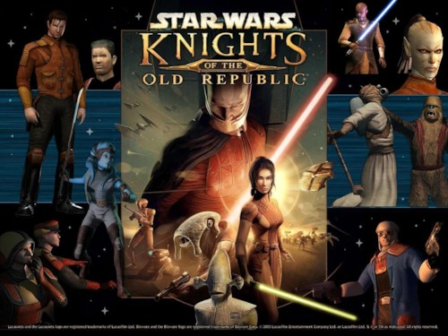
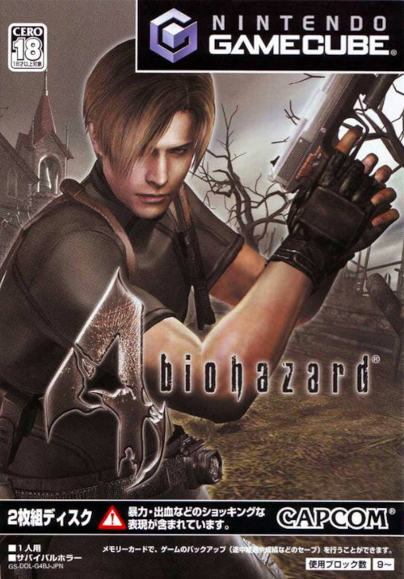
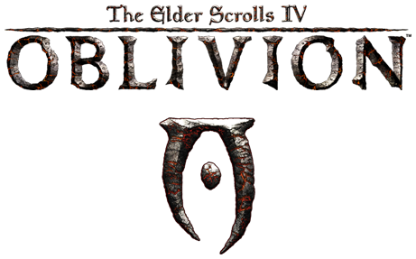
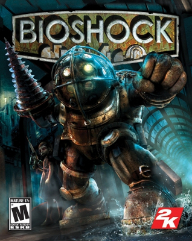
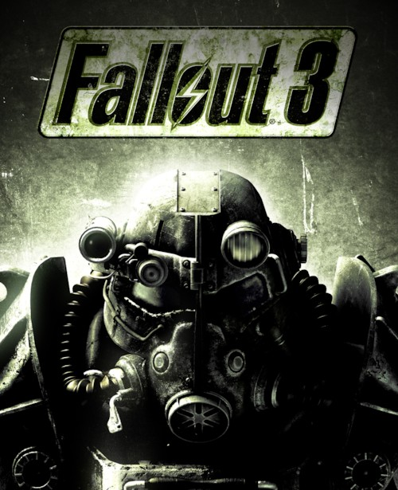
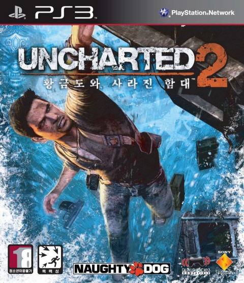

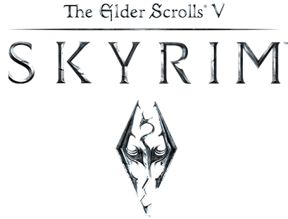
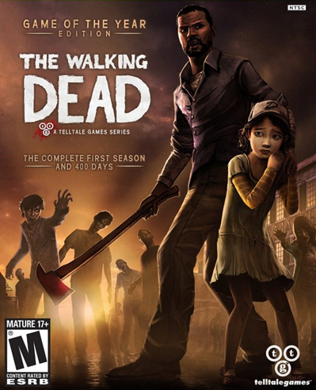
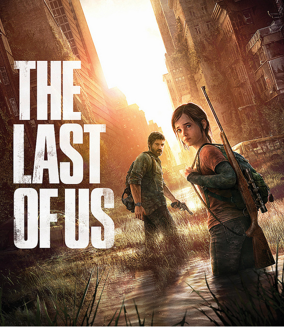
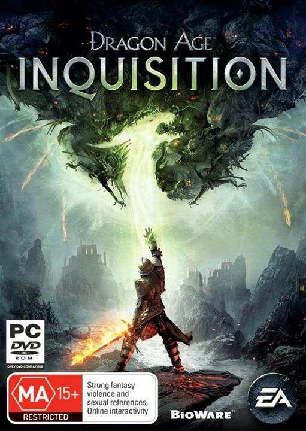
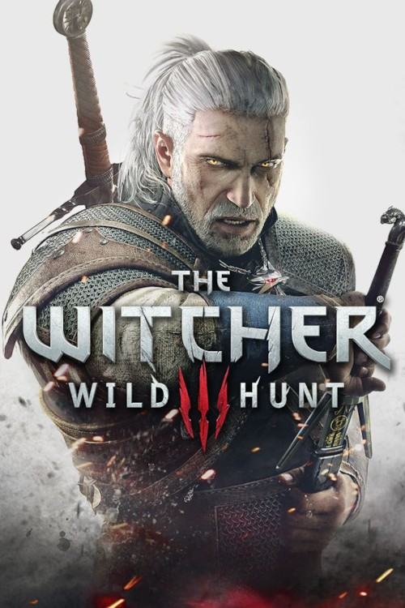
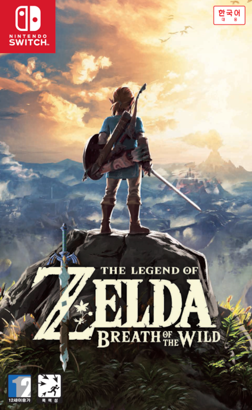
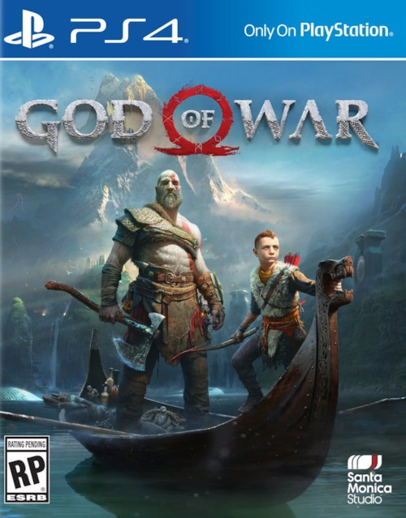
| 1979 | 1980 | 1981 | 1982 |
|---|---|---|---|
| 스페이스 인베이더 | Asteroid | 팩맨 | 팩맨 |
| 1983 | 1984 | 1985 | 1986 |
| Fall Position | 동키콩 Jr | 피트폴 2 | 버블보블 |
| 1987 | 1988 | 1989 | 1990 |
| 아웃런 | 그라디우스 2 | 테트리스 | 드래곤 퀘스트 4 |
| 1991 | 1992 | 1993 | 1994 |
| 소닉 더 헤지혹 | 스트리트 파이터 2 | 모탈 컴뱃 | 동키콩 컨트리 |
| 1995 | 1996 | 1997 | 1998 |
| 버추어 파이터 2 | 슈퍼 마리오 64 | 파이널 판타지 7 | 젤다의 전설:시간의 오카리나 |
| 1999 | 2000 | 2001 | 2002 |
| 소울 칼리버 | 심즈 | GTA 3 | 메트로이드 프라임 |
| 2003 | 2004 | 2005 | 2006 |
|---|---|---|---|
| 스타워즈 구 공화국의 기사단
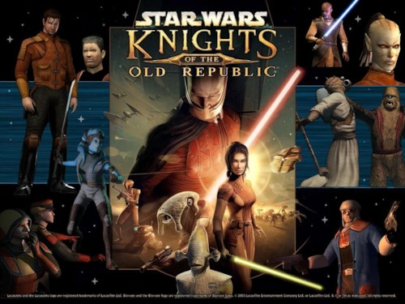 |
하프라이프 2
|
바이오 하자드 4
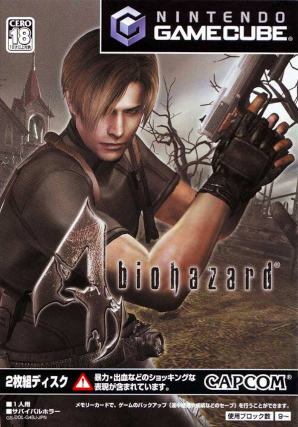 |
엘더스크롤 4: 오블리비언
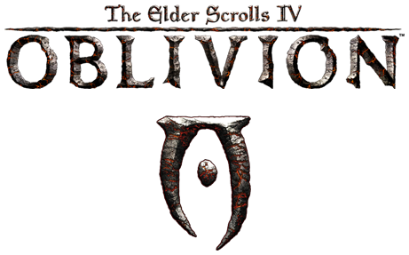 |
| 2007 | 2008 | 2009 | 2010 |
| 바이오쇼크
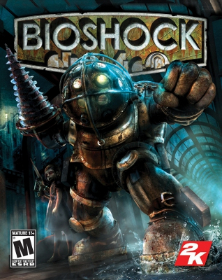 |
폴아웃 3
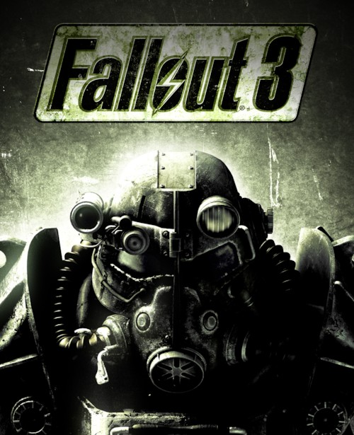 |
언차티드 2: 황금도와 사라진 함대
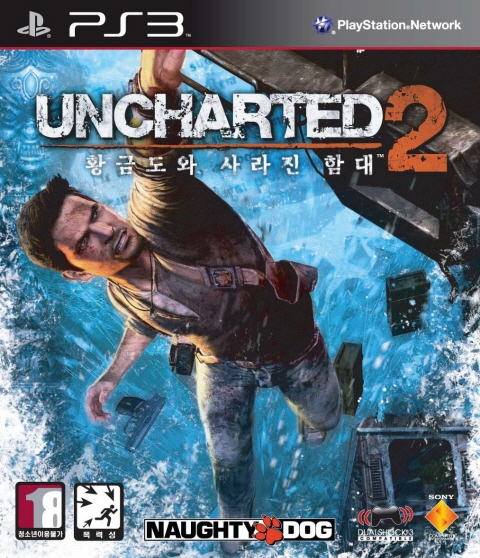 |
레드 데드 리뎀션
|
| 2011 | 2012 | 2013 | 2014 |
| 엘더스크롤 5: 스카이림
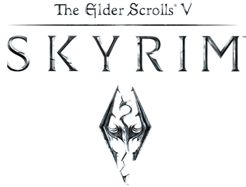 |
더 워킹 데드 시즌 1
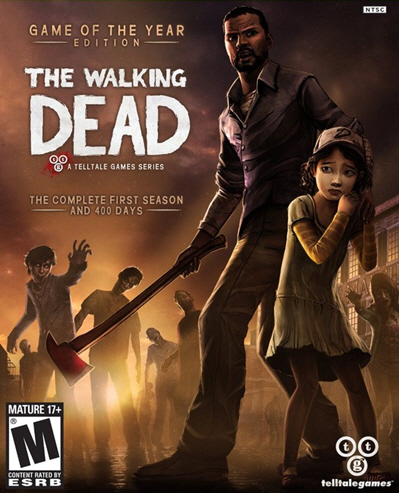 |
더 라스트 오브 어스
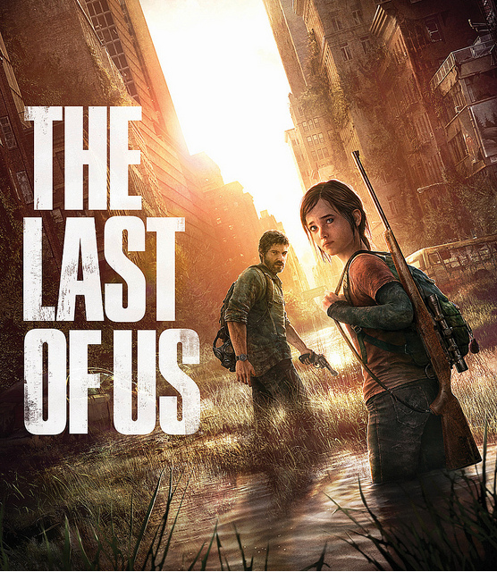 |
드래곤 에이지: 인퀴지션
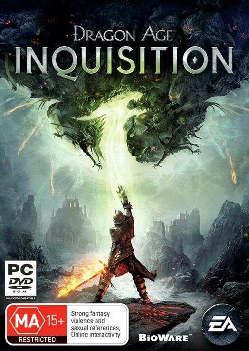 |
| 2015 | 2016 | 2017 | 2018 |
| 더 위쳐 3: 와일드 헌트
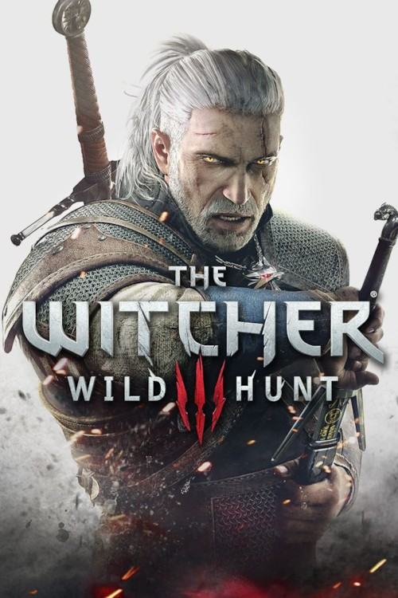 |
언차티드 4: 해적왕과 최후의 보물
|
젤다의 전설: 야생의 숨결
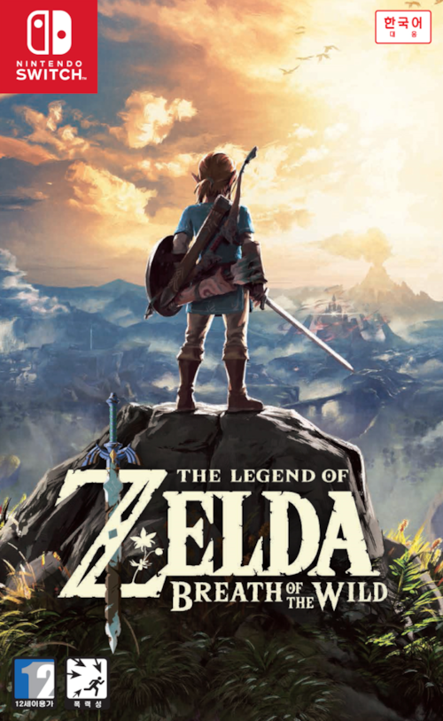 |
갓 오브 워
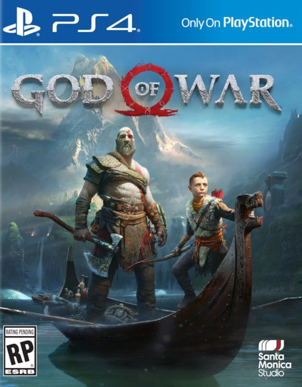 |